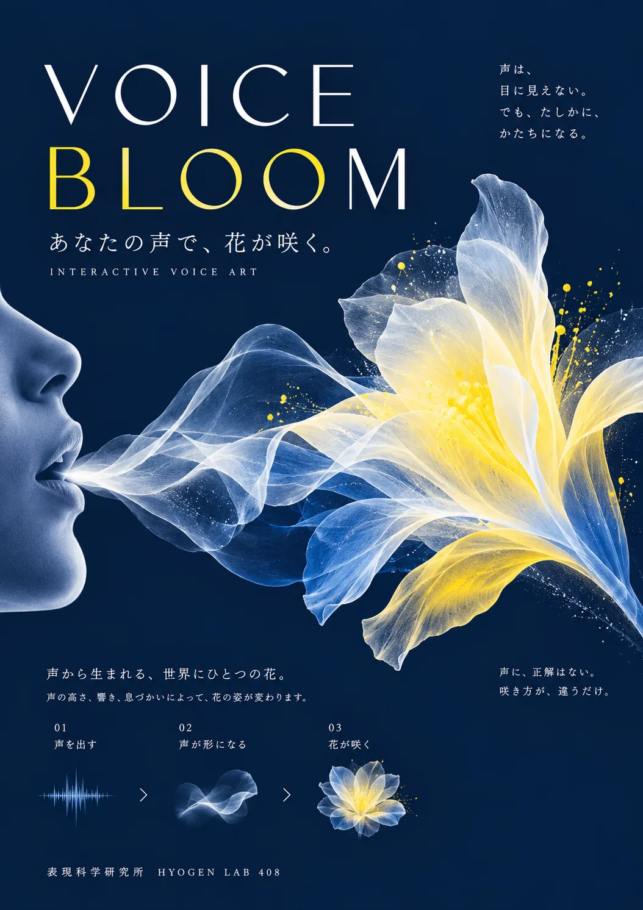

Three ways in巡り方を選ぶ
Floor guide館内マップ
すべての作品七つの展示室の平面図です。部屋を押すと、その展示室の作品だけが並びます。小さな額は、その部屋に掛かっている作品です。


表現科学研究所は、表現がどう生まれ、どう受け取られ、表現した本人に何を返すのかを研究しています。ここに並んでいるのは、私たちの実験です。
まだ、うまく言えなくても大丈夫です。 相談する
七つの展示室の平面図です。部屋を押すと、その展示室の作品だけが並びます。小さな額は、その部屋に掛かっている作品です。
表現科学研究所は、表現がどう生まれ、どう受け取られ、表現した本人に何を返すのかを研究しています。ここに並んでいるのは、私たちの実験です。
まだ、うまく言えなくても大丈夫です。 相談する